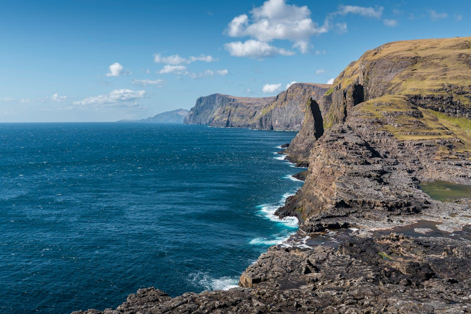

La Tua Bussola per Nuove Avventure
Rummerflow nasce con una missione chiara: essere la bussola ispirazionale per viaggiatori curiosi e appassionati. Come rivista di viaggi e itinerari leader nel settore, ci dedichiamo alla scoperta di luoghi indimenticabili, raccontando storie che accendono il desiderio di partire.
Selezioniamo con cura le migliori destinazioni turistiche e proponiamo percorsi unici per le tue vacanze in Italia. Il nostro team di esperti esplora costantemente il territorio per portarti alla scoperta di pittoreschi borghi italiani e affascinanti città d'arte, offrendoti consigli pratici e visioni autentiche per vivere ogni luogo come un vero locale.
Preparati a vivere emozioni che solo il viaggio sa regalare.
